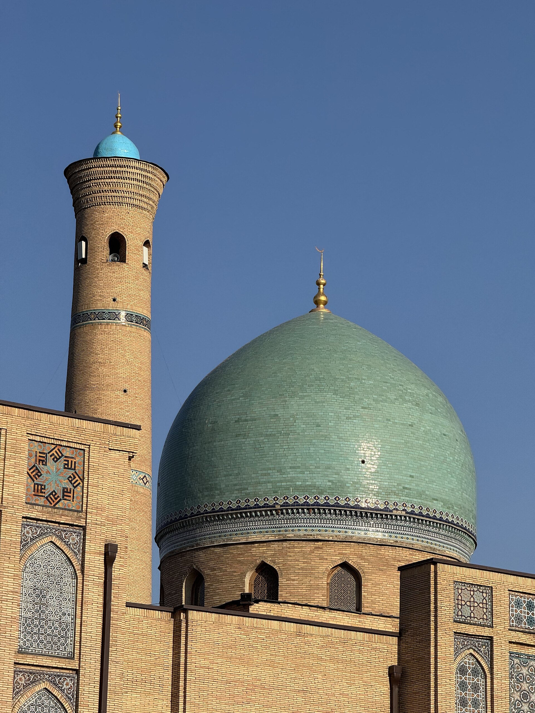

Религиозное возрождение в Узбекистане: возвращение мечетей, хаджа и религиозного образования (1989–1992)
Статья, основанная на фактах, о возрождении ислама в Узбекистане в позднесоветские и первые годы независимости — примерно в 1988–1992 годах: открытие мечетей, возобновление хаджа, возрождение религиозного образования и реорганизация муфтията. Только проверенные факты; спорные цифры приводятся со ссылкой на источник.

Возвращение ислама в общественную жизнь Узбекистана началось за несколько лет до независимости и ускорилось в годы независимости. С конца 1980-х до начала 1990-х годов открывались мечети, расширялся хадж, возрождалось религиозное образование и была реорганизована официальная религиозная администрация.
Советский контекст и САДУМ
При советской власти религия находилась под жёстким контролем. Духовное управление мусульман Средней Азии и Казахстана (САДУМ), созданное в Ташкенте 20 октября 1943 года, было официальным органом, управлявшим исламом в пяти республиках. Число официально действующих мечетей было очень мало, а официальное религиозное образование фактически ограничивалось двумя учреждениями: медресе Мир-и-Араб в Бухаре (вновь открыто в 1946 году) и Исламским институтом имени имама аль-Бухари в Ташкенте. С перестройкой и гласностью Михаила Горбачёва отношение к религии смягчилось с 1988 года, что открыло путь к быстрому возрождению ислама.
Реорганизация муфтията
Мухаммад Содик Мухаммад Юсуф был назначен главой САДУМ — муфтием — в 1989 году. В том же году он был избран депутатом Верховного Совета СССР и использовал эту трибуну, чтобы добиться расширения доступа к хаджу и разрешения открывать мечети и религиозные школы. По мере распада СССР САДУМ разделилось по республиканским границам; в 1992 году Управление мусульман Узбекистана было учреждено как самостоятельная религиозная администрация. Мухаммад Содик Мухаммад Юсуф был первым муфтием независимого Узбекистана и занимал этот пост до 1993 года.
Открытие мечетей и исторических памятников
По данным исследователей, число мечетей в Узбекистане выросло примерно с 80 в 1989 году до почти 1 500 к 1991 году — значительная их часть, около 800, в Ферганской долине. В этот период исторические мечети и медресе были восстановлены и вновь открыты для богослужения. Комплекс Хазрати Имам (Хаст Имам) в Ташкенте стал резиденцией религиозной администрации; в нём хранятся исторические медресе и знаменитый Коран Усмана (Мусхаф), переданный религиозной администрации в 1989 году.
Расширение хаджа
При советской власти паломничество в Мекку было строго ограничено. По мере смягчения ограничений в период перестройки возможность совершить хадж существенно расширилась с конца 1980-х и с 1990 года. Как депутат Верховного Совета СССР муфтий Мухаммад Содик Мухаммад Юсуф способствовал увеличению квоты на хадж для советских мусульман.
Религиозное образование и закон 1990 года
В ходе возрождения медресе и религиозные институты вновь открывались или учреждались. 1 октября 1990 года Верховный Совет СССР принял Закон «О свободе совести и религиозных организациях»; он положил конец государственному атеизму и предоставил религиозным организациям статус юридического лица, право владеть имуществом, создавать религиозные учебные заведения и распространять религиозную литературу. После независимости Узбекистан принял собственный закон о свободе совести.
Независимость и символический момент
Узбекистан провозгласил независимость 31 августа 1991 года. Ислам Каримов руководил республикой с 1989 года и стал президентом в 1991 году. На церемонии вступления в должность президента (1991 год) он принёс присягу, держа Коран в одной руке, — символ признания ислама частью национального наследия при сохранении принципа светского государства.
Примечание: эта статья излагает исторические факты. Некоторые цифры по числу мечетей и участников хаджа опираются на данные исследователей и могут различаться в разных источниках; поэтому они приводятся «по данным исследователей».